Paper 3 Summary Note
Data Representation
Data types
-
Built in data types are supported by programming languages by default. There is a defined range of possible value and defined operations.
-
User defined data types are created by user.
But the programming language should support the creation.
-
Composite data type involve a reference to another data type whereas non-composite data types dont.
-
Composite and non-composite data types can be built in or user defined.
Enumerated data types.
Enumerated data types are user-defined non-composite data type.
- Example of declaration
1
TYPE TDirections = (North, East, South, West)
- Instantiation
1 2
DECLARE Direction1 : TDirections Direction1 ← North
Enumerated data types are ordinal(implied order).
Record data type.
Records are user-defined composite data type.
- Example of definition and declaration ```markdown TYPE Student DECLARE StudentId : INTEGER DECLARE Name : STRING ENDTYPE
DECLARE Ram : Student
1
2
3
4
5
6
7
- Operations
```markdown
Ram.StudentId <- "10A1"
Ram.Name <- "Ram"
DISPLAY Ram.StudentId
Pointer
Pointer data type is used to reference a memory location
1
TYPE <pointer> = ^<Typename>
- Declaring and instantiating
1 2
TYPE IntegerPointer = ^INTEGER DECLARE Pointer1 : IntegerPointer
- Now Pointer1 can be used to reference memory location of Integer type
1
2
3
4
5
DECLARE Num1 : INTEGER
Num1 <- 100
IntegerPointer <- @Num1 //This store address of Num1 in IntegerPointer
PRINT MyIntegerPointer^ //This is called derefencing gives value of Num1
Set is a composite data type which contains unorganized, unique collection of data.
File organization
- File can be:
- Text file: Contains data stored according to a character code.
- Binary file: Program stores data in its own internal representation.
Serial Files
Records are not organized in definite order.
- When a new data arrives:
- Open the file
- Append data to end of file
- i.e. data entry is done in chronological order(i.e. in the order they arrive in)
Sequential file:
Records are sorted/ordered in a particular way.
- When a data arrives, there are two methods:
- Append to end and sort later
- OR
- Create another file
- Read the old file sequentially and write to new file until position for new data is reached
- Write the new data
- Write remaining data
Direct-access/Random-access files
Doesn’t require sequential read write.
-
Uses a separate index file with key and position field.
-
When a data arrives:
- Use hashing algorithm to calculate position based on key(some value from data)
- Data is added to that particular position
- If two data data get same position, we can:
- Use next vacant position
- Use a different overflow file or keep at end of file
- Create a linked list for data whose key results in same position.
File access
- Sequential access: Read file line by line
- Random/Direct access: Read the required data only (Hashing algorithm is used)
Communication and Internet technologies
Transmission modes
There are two common transmission modes: Circuit switching and Packet Switching
Circuit switching
- Steps:
- A Circuit/channel is established
- Data transfer takes place through that channel
- After data transfer is done, connection is terminated/broken.
- Advantages:
- Faster
- Data arrives in order
- No packet loss
- Dedicated channel => reliable and whole bandwidth is available
- Disadvantages:
- Noone else can use the channel
- No alternative routing if the channel fails
- Link establishment time
Packet switching
- Steps:
- Data is broken into data packets
- Each packet is routed independently
- Route selection is done by router based on traffic and routing table
- Each packet goes through shortest path
- Packet can reach in different order
- Advantage: Alternate route, higher data transmission, no link establishment time.
-
Disadvantages: Bandwidth sharing, packet loss, complex protocol, slower.
- If TCP/IP protocol is used, packet contains:
- IP of source
- IP of destination
- Current hop number
- Length of packets in bytes
- Number of packets in message
- Sequence number to allow reassembly of packets
- Checksum value
Routing table
Routing table contains the information necessary to forward a package along the shortest/best route.
- Router:
- Receives a packet
- Checks packet header and compares it with routing table
- Routing table contains:
- number of hops
- MAC address of next router
- Metric(Cost)
- networkID
- gateway(same info as next hop)
- netmask
- interface
Protocol
Hardware and software of devices in a network can be different, protol is common so that they can understand each other.
- For TCP/IP protocol suits, there are four layers:
- Application layer: Contains programs that exchange data(HTTP, SMTP, POP, IMAP, DNS,FTP, RIP, SNMP)
- Transport layer: Regulates network connection(TCP, UDP)
- Internet/Network layer - Identifies intended network and host(IP)
- Link layer - identifies and moves traffic accross local segments(Ethernet, WiFi, Bluetooth)
Various protocols and their task:
| Protocol | Description |
|---|---|
| HTTP | Hypertext Transfer Protocol; this is a protocol responsible for correct transfer of files that make up web pages on the World Wide Web |
| SMTP | Simple Mail Transfer Protocol; this handles the sending of emails |
| POP3/4 | Post Office Protocol; this handles the receiving of emails |
| IMAP | Internet Message Access Protocol; this handles the receiving of emails |
| DNS | Domain Name Service; protocol used to find the IP address, for example, when sending emails |
| FTP | File Transfer Protocol; this is a protocol used when transferring messages and attachments |
| RIP | Routing Information Protocol; this is the protocol routers use to exchange routing information over an IP network |
| SNMP | Simple Network Management Protocol; protocol used when exchanging network management information between network management and network devices (such as routers, servers and other network devices) |
| TCP | Transmission Control Protocol; ensures reliable, ordered, and error-checked delivery of data between applications |
| IP | Internet Protocol; responsible for addressing and routing packets of data so that they can travel across networks and arrive at the correct destination |
| WiFi | Wireless Fidelity; a technology that allows electronic devices to connect to a wireless LAN (WLAN) network |
| Ethernet | A family of networking technologies used for local area networks (LANs), providing a standard way to connect computers on a network over a wired connection |
| Bluetooth | A wireless technology standard for exchanging data over short distances from fixed and mobile devices |
Difference Between TCP and UDP
| Feature | TCP (Transmission Control Protocol) | UDP (User Datagram Protocol) |
|---|---|---|
| Connection | Connection-oriented | Connectionless |
| Reliability | Reliable, ensures data delivery and order | Unreliable, no guarantee of delivery or order |
| Error Checking | Yes, with retransmission of lost packets | Minimal, no retransmission of lost packets |
| Speed | Slower due to overhead | Faster with less overhead |
| Use Cases | Web browsing, email, file transfers | Video streaming, online gaming, VoIP |
Peer-to-peer(P2P) file sharing
P2P is an architecture that has no structure and no controlling mechanism. (BitTorrent is most used protocol)
-
Peers can act as both client and server
-
Terms:
- Torrent: content description(metadata) file that contains name of tracker
- Tracker: server that leads peers to conttent
- Leechers: peers that download but dont share
- Peers: Users that download and share
- Seed: users that share file
Hardware and virtual machines
- CU is responsible for decoding instructions and generating control signals.
- CU can be hardwired or microprogrammed
CISC vs RISC processors
- RISC(Reduced instruction set computer/computing)
-
CISC(Complex instruction set computer/computing)
- Risc has:
- fewer instructions
- simpler instructions
- single-cycle instructions (mostly)
- fewer addressing modes
- easier pipeline
RISC approach uses hard-wired control unit and CISC uses microprogrammed.
Pipelining is easier in RISC.
Pipelining
Pipelining is parallelism applied specifically to instruction execution.
Pipelining is based on dividing fetch-decode-execute cycle into number of stages.
Five-Stage pipeline
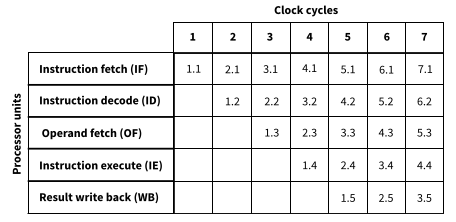
Computer architecture based on number of instruction streams and data streams(Flynns classification)
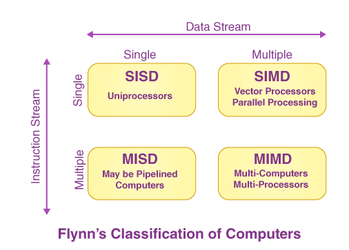
Massively parallel computer systems
Latest type of ‘supercomputer’. MIMD based. The programs running on different computers can communicate by passing message using the network.
Virtual machines
Software that emulates hardware of a real computer system within hostOS to let softwares run in bounded environment and resource.
- Advantage:
- Different OS can be used in one computer
- Security and privacy
- Testing for various OS
- Drawback:
- Reduced performance compared to normal OS
Logic circuits and Boolean algebra
Logic circuits use logic gates as building block to perform certain binary operation.
- Types:
- Combinational:
- Depend on current input only
- Eg: Half adder, full adder etc
- Sequential:
- Depend on present and past input/output (i.e. have memory)
- Eg: Flipflops, counters etc
- Combinational:
Combinational circuits
Don’t remember circuits. Recognizing is enough.
Half adder
Adds two bits to produce Sum and Carry bits.
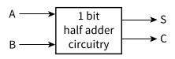
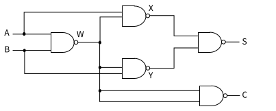
Full adder
Adds three bits(A,B and CarryIn) to produce Sum and Carry
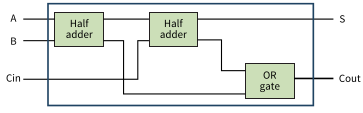
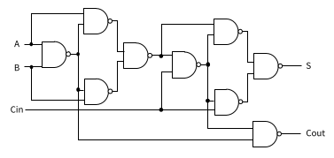
NAND and NOR gates are universal gates; they can be used to construct any other logic gates.
Sequential circuits
SR flipflop
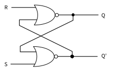
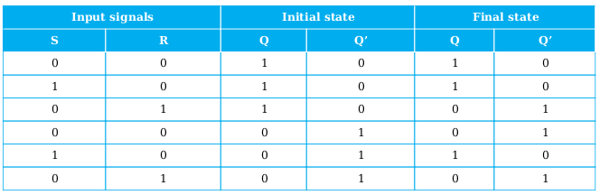
- S=1 sets value of Q to 1 and Q’ to 0
- R=1 sets value of Q to 0 and Q’ to 1
- S=0, R=0 => output remains same as before
SR flipflop has invalid state S=1,R=1. In this case, use Q=0 and Q’ = 1
JK flipflop
JK solves the invalid state problem of SR flipflop by toggling the value of Q and Q’ when J=1 and K=1
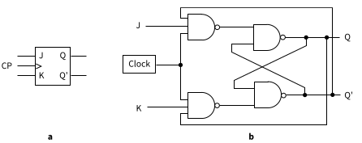 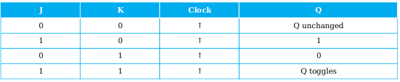
Boolean algebra
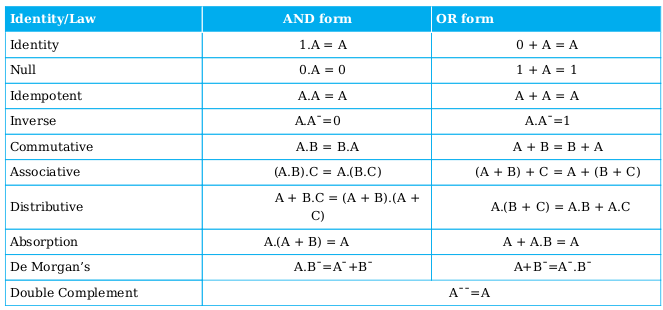
Remember DeMorgan’s law and Absorption law, others are intuitive.
System Software
Computer has BIOS(Basic input/output system) stored in ROM which starts a bootstrap program that loads the OS into memory and sets it running.
Operating System
Logical structure of OS provides two modes of operations. User mode is available to application programs and ‘Kernel mode’ has full and unrestricted access to system and its resources.
-
Layered Structure: 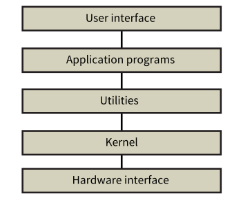
-
Layered Structure is hard to achieve in practice.
-
Modular structure 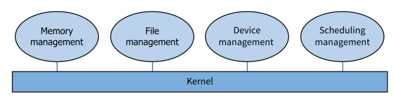
OS can be monolithic(built like a single program) or micro-kernel(core functionalities separated from extras)
Process scheduling
Process is program in execution.
- When a user runs a program:
- High-level or long-term scheduler controls selection of program stored on a disk to be moved to main memory. (And sometimes medium-term scheduler moves it back to avoid memory overcrowding)
- Low-level scheduler controls when program in memory has access to CPU.
-
Process states: 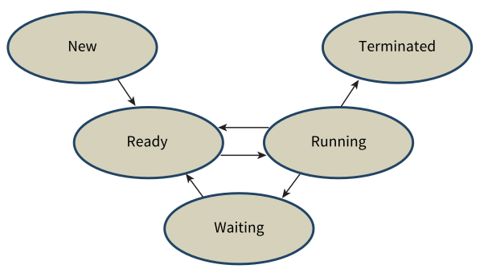
- Transitions:
- When user opens a program, it is in new state.
- When process arrives in memory and PCB is created : ready state.
- When dispatcher gives access to CPU: running state. Back to ready if halted by interrupt.
- If process can’t continue (waiting for input or hardware..): waiting state. If the resource it is waiting for is available, it goes to ready state.
- When completed, terminated state.
If a process is separated into different parts for execution, those parts are called threads.
- Interrupts: Signal from hardware or software.
- To terminate a process
- To switch state
- For scheduling
- Scheduling algorihtms: Algorithm responsible for allocating CPU to process.
- Preemptive scheduler can stop one process for another.
- Non-preemptive can’t.
- Examples: FCFC(First Come First Serve), Round-Robin(allcates time slices) etc.
I/O system
Is related to input and output from user or storage devices.
Memory management
- Includes:
- Loading program
- Allocatting
- Moving process out of memory
The simplest method would be to allocate all memory available to a single application but this isn’t efficient.
- Other methods:
- paging
- Segmentation
- Virtual memory
paging
Memory is split up into partitions(blocks) of a fixed size. Logical blocks are called pages and physical blocks are called pages. These blocks are of same size.
- Programs are allocated a number of pages that is usually larger than what is actually needed.
-
Each process has its own page table that maps logical addresses into physical addresses, flags, page number and time of entry. 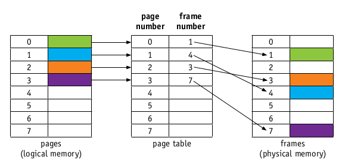
- When process needs access to page that is not available in memory(indicated by page table), this is called page fault. This almsot always requires a page to be removed from memory, which is done using page replacement algorithm.
- First in first out
- Optimal page replacement(looks foward in time)
- Least recently used (LRU) page replacement
- Clock page replacement/Second-chance page replacement. (Circular queue with R flag. removed if R=0)
Segmentation
Logical address space is broken up into variable-size memory blocks/partitions called segments.
- Segment map table maps logical memory segments to physical memory.
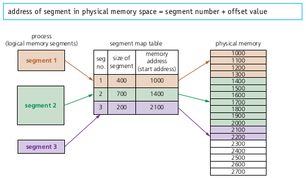
Virtual memory
Using hdd or ssd when RAM fills up and we need more memory.
-
Problem: 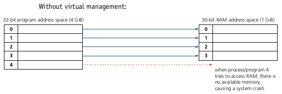
-
Solution: 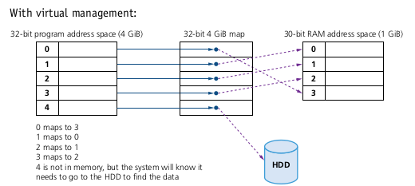
As main memory fills, more and more data/pages need to be swapped in and out of virtual memory. This leads to high read/write head movements; this is known as disk thrashing.
- A point can be reached when the execution of proceess comes to a halt since the system is busy paging in and out of memory; this is known as thrash point.
The main purpose of OS is to abstract user/application/programmer from complexity of all the resource handling and stuff via system calls and interface.
Translation software
Converts higher level program to machine level.
Compiler vs Interpreter
- Interpreter executes thee program as it is translating whereas Compiler doesn’t.
-
Compilation produces either error message or object code. Object code can be executed without needing recompilation. Interpreter needs to be used every time the program is executed.
- Compiling has two parts:
- Front-end analysis: Produces intermediate code
- Back-end analysis: Produces object code from intermediate code
- Front-End analysis:
- Lexical analysis: Removes unecessary(for compiler) characters like white spaces, comments.
- Syntax analysis(Parsing): Checks for syntax errors.
- Semantics analysis: Ensures that statements are meaningful and consistent to rules of programming language(type check, scope resolution, consistency)
- Intermediate code generation: Platform independent code that is easier to optimize and translate to machine code. 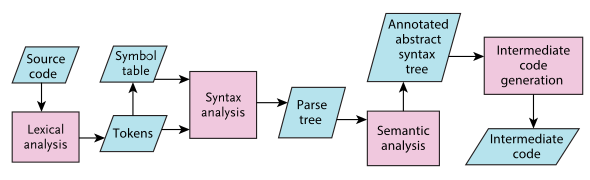
- Compiler also optimizes your code most of the time.
Syntax diagrams and Backus-Naur form
-
Syntax diagrams: 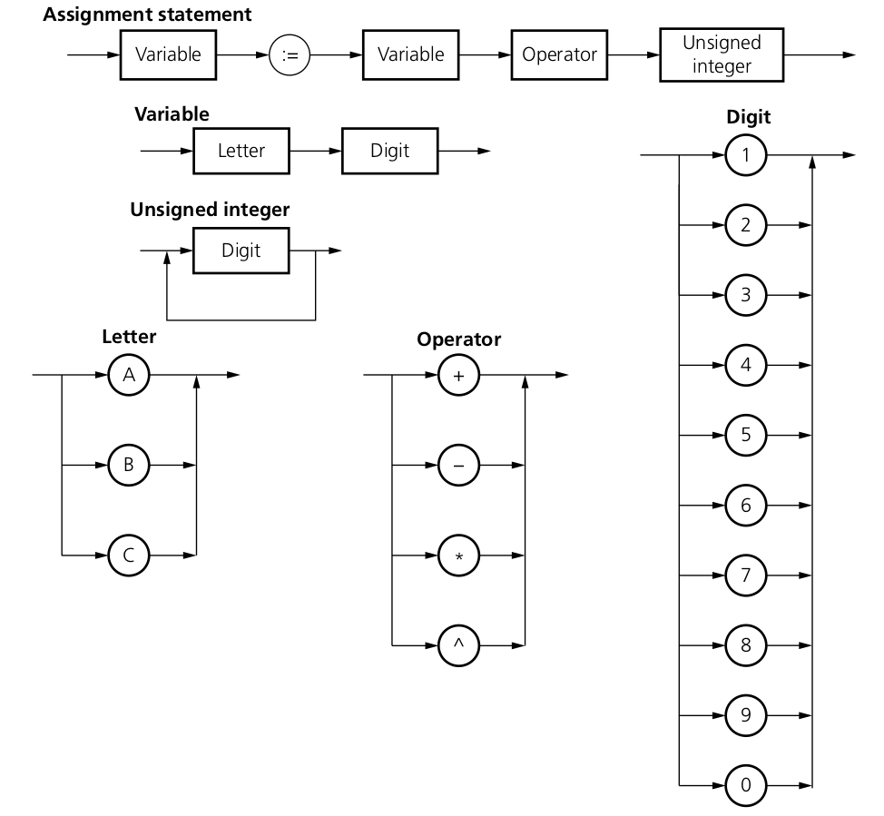
- Here:
- In syntax diagram of assignment statement and variable, you have a linear path i.e. for variable, you must have a letter followed by a digit and nothing else.
- In syntax diagram of letter, operator and digits, you have alternatives i.e. you can use any one of the options availble and nothing else.
- In syntax diagram of unsigned integer, loop/repetition is used i.e. you can use any number of digits(at least one).
- BNF:
1
2
3
4
5
<variable> ::= <letter> | <digit> ; # alternatives
<letter> ::= A | B | C ;
<digit> ::= 1 | 2 | 3 ;
<variable> ::= <letter> | <variable> <letter>; # Any number of letters (at least one)
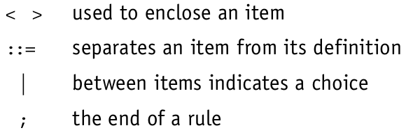
Reverse Polish Notation (RPN)
- Infix: A + B
- Prefix: +AB (PN)
-
Postfix: AB+ (RPN)
- Why use RPN instead of Infix?
- Can be processed without backtracking. i.e. easier processing
- No ambiguity or precedence rules or brackets
- Evaluating RPN using stack:
- Read each character from left to right:
- If operator:
- Pop two values from stack (p1 first and p2 next), perform operation as *p2
p1* and push the result to stack.
- Pop two values from stack (p1 first and p2 next), perform operation as *p2
- If value:
- push to stack
- If operator:
- At end, you will have result in stack.
- Read each character from left to right:
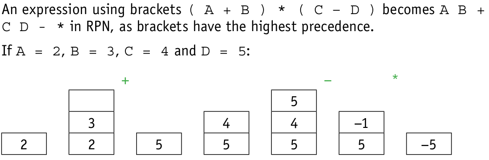
-
Converting to RPN:
-
Infix: P + Q - R / S <- Question
- Division has highest precedence so change R/S to RS/
- P + Q - RS/
- Now perform addition:
- PQ+ - RS/
- Now perform subtraction:
- PQ+RS/- <- Answer
-
Security
Security deals with Confidentiality, Authenticity, Integrity and Non-repudiation.
- Confidentiality: Non-indented participant shouldn’t be able to access the data.
- Integrity: Data shouldn’t be tampered with.
- Availability: Authorized receiver should be able to always access the data.
- Authenticity: Identification of participants to verify that they are legitimate.
- Non-repudiation: Participants shouldn’t be able to deny participation.
Cryptography
Cryptography is the process of hiding or coding information so that only the person a message was intended for can read it.
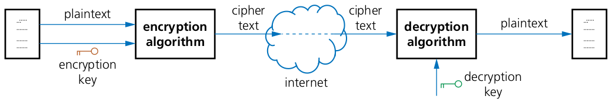
- Plain text: original data being sent
- Cipher text: After encryption
Usually block cipher is used. where encryption algrithm is applied to a group of contiguous bits.
Symmetic encryption: Only one key is used. Assymetric encryption: Two keys are used.
- In assymetric encryption:
- Two keys: public key and private key.
- Public key is available to anyone who wants it.
- For eg. If A wants to send message to C, A uses C’s public key to encrypt the message and sends it. Now only C has the private key that is used to decrypt the message.
Quantum cryptography
Utilizes the physics of photons. A QKD(Quantum key distribution) algorithm is used. Based on polarization.
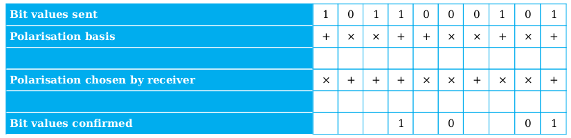
Photons once sent cant be read and sent again so, safe. But requires specialized quantum channel.
Digital signatures and digital certificates
Digital signatures are a way of validating the authenticity of digital documents and indentifying the sender. A digital signature is often derived from digital certificate.
- Method 1:
- If A wants to send a message and others needs to verify that, this can be done:
- A sends message by encrypting it using his private key.
- If others can decrypt it using his public key, they can be sure it was sent by A.
- This isn’t useful if the message is confidential.
- If A wants to send a message and others needs to verify that, this can be done:
- Method 2:
- Put the plain text through one way hasing algorithm(like md4 or md5) which produces a digest(numerical value)
- Then send plain text and digest after encrypting with receivers public key to generate digital signature.
- The receiver decrypts using his private key and gets digest and private key.
- Then, receiver also generates digest using the hashing algorithm and compares it with received digest.
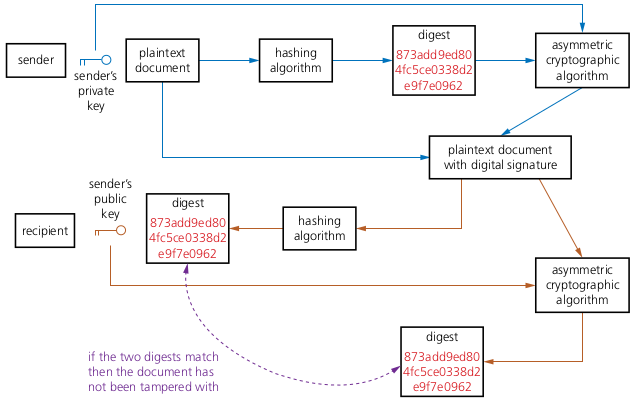
Using digital signature, we can verify that the file hasn’t been tampered with but can’t be sure about the source.
- Method 3: Digital Certificate
- Digital Certificate is an electronic document used to prove the online identity of a website or an individual. It is issued by the certificate authority(CA) that contains a lot of details including a digital signature created by condensing all of the certificate details.
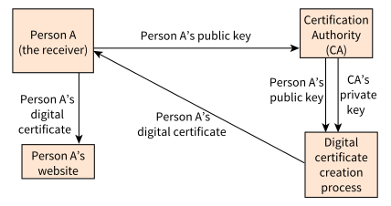
Anyone who wishes to extract the public key from the certificate has to use the CA’s public key.
Also, it is possible to produce self-signed digital certificate.
SSL and TLS
Secure Sockets Layer(SSL) and Transport Layer Security(TLS) are part of transport layer. TLS is modern and based on SSL.
- Functions:
- Encryption
- Identification of client and server.
- How does SSL work?
- TCP connection is established
- Handshake protocol from SSL suite is invoked which requests SSL certificate from server
- Sender sends SSL certificate and its public key
- The browser uses this public key to encrypt a key to be used for this one session and SSL connection is established.
- There is also agreement on encryption algorithms to be used.
- How does TLS work?
- It has two main layers: Record layer(for data transfer with or without encryption) and Handshare layer(For secure session establishment)
- TLS is improvement upon SSL with these extra features:
- Ability to add new authentication methods
- Session caching to resume a session if possible
- Handshaking and record is kept separate
Artificial Intelligence
- Definitions:
- AI: Simulation of human intelligence in machine
- Machine Learning(ML): Computer based system that learns without explicit programming.
- Deep Learning(DL): Making machine think similar to human. Inspired by understanding of how human brain works.
- Categories:
- Narrow AI: When a machine has superior performance to human in specific task.
- General AI: Machine is similar to human in any intellectual task.
- Strong AI: Machine has superior performance in many tasks compared to human.
Machine learning
It is machine learning if a computer based system can perform task based on knowledge that it acquires and improves with experience and available data.
- Types:
- Supervised learning: Learns from labelled data
- Regression, Classification
- Unsupervised learning: Learns from unlabelled data
- Clustering
- Reinforcement learning: It larns on the basis of reward and punishment when carrying out an action.
- Semi supervised: Makes use of large amount of unlabelled data and relatively small amount of labelled data.
- Supervised learning: Learns from labelled data
Deep Learning
Based on human understanding of human brain. Heavily inspired by concept of neurons.
- Neurons: Functions with trainable parameters.
- Layers: Made up of neurons
- Neural Network is made up of:
- Input layer
- Multiple hidden layer
- Output layer
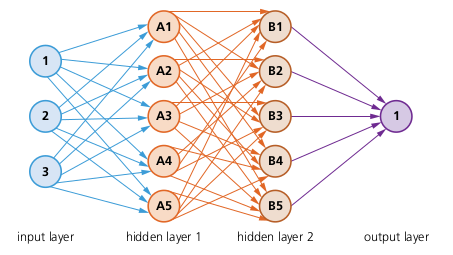
Shortest path algorithms
- Terms:
- Node or vertex: Point on graph
- Edge: line that connects nodes
- Traversal(moving) from one node to another has some cost associated with it.
- Heuristics: Shortcuts/hints that can be used to find solution(shortest path)
Dijkstra’s algorithm
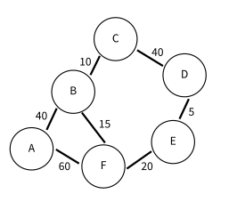
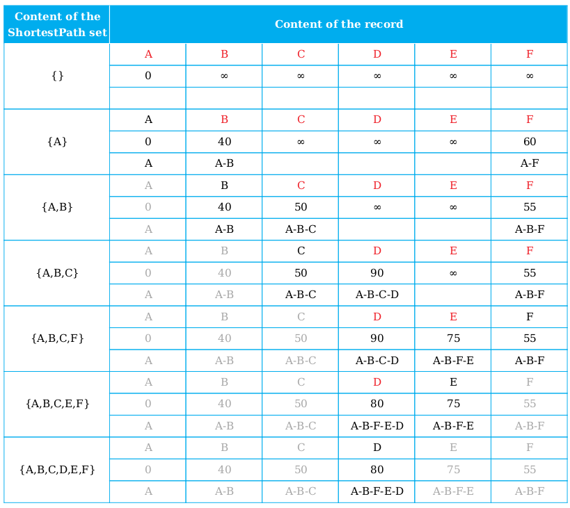
- Algorithm
- Set initial distances for all vertices: 0 for the source vertex, and infinity for all the other.
- Choose the unvisited vertex with the shortest distance from the start to be the current vertex. So the algorithm will always start with the source as the current vertex.
- For each of the current vertex’s unvisited neighbor vertices, calculate the distance from the source and update the distance if the new, calculated, distance is lower.
- We are now done with the current vertex, so we mark it as visited. A visited vertex is not checked again.
- Go back to step 2 to choose a new current vertex, and keep repeating these steps until all vertices are visited.
- In the end we are left with the shortest path from the source vertex to every other vertex in the graph.
A* Algorithm
A* Algorithm also incorporates heuristic value along with cost
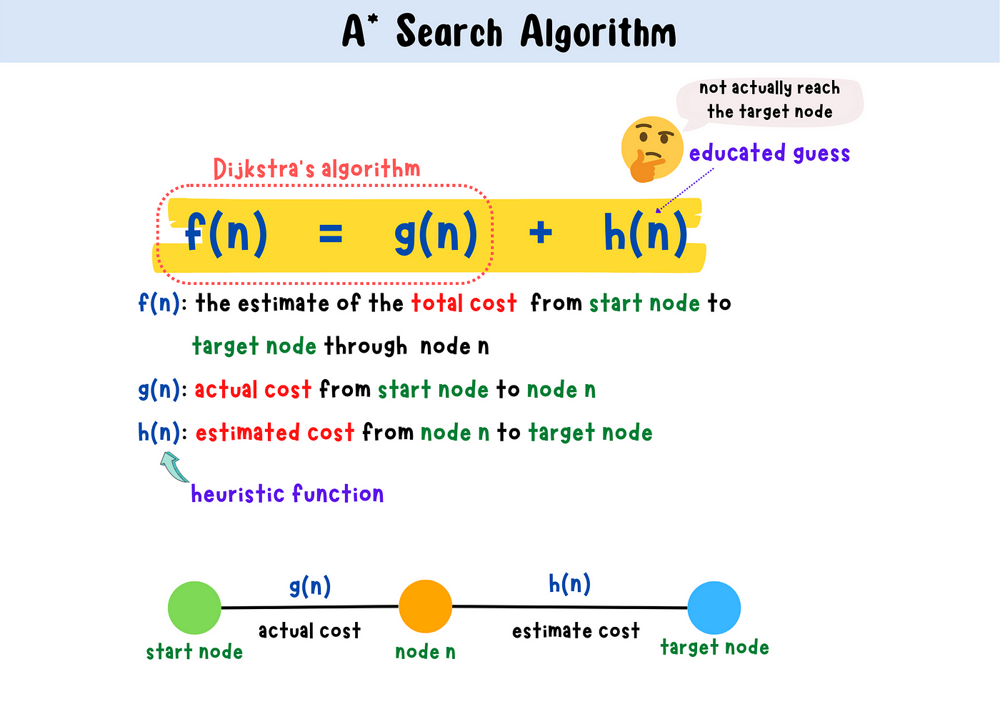
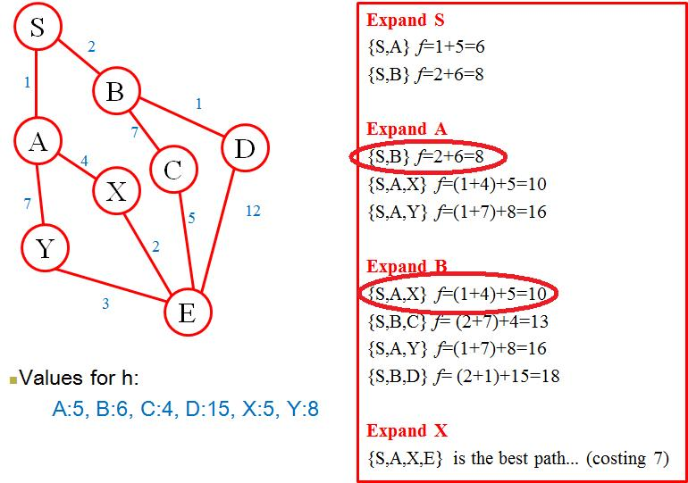
Algorithms
You need to declare variables before using them. Declaration has been skipped in pseudocode below
Linear Search
1
2
3
4
5
6
7
8
9
10
11
12
13
14
15
16
17
upperBound ← NumberOfItems - 1
lowerBound ← 0
OUTPUT "Please enter item to be found"
INPUT item
found ← FALSE
index ← lowerBound
REPEAT
IF item = myList[index] THEN
found ← TRUE
ENDIF
index ← index + 1
UNTIL (found = TRUE) OR (index > upperBound)
IF found THEN
OUTPUT "Item found"
ELSE
OUTPUT "Item not found"
ENDIF
Binary Search
1
2
3
4
5
6
7
8
9
10
11
12
13
14
15
16
17
18
19
20
21
22
upperBound ← NumberOfItems - 1
lowerBound ← 0
OUTPUT "Please enter item to be found"
INPUT item #Item to find
found ← FALSE
REPEAT
index ← INT ( (upperBound + lowerBound) / 2 )
IF item = myList[index] THEN
found ← TRUE
ENDIF
IF item > myList[index] THEN
lowerBound ← index + 1
ENDIF
IF item < myList[index] THEN
upperBound ← index - 1
ENDIF
UNTIL (found = TRUE) OR (lowerBound = upperBound)
IF found THEN
OUTPUT "Item found"
ELSE
OUTPUT "Item not found"
ENDIF
Insertion sort
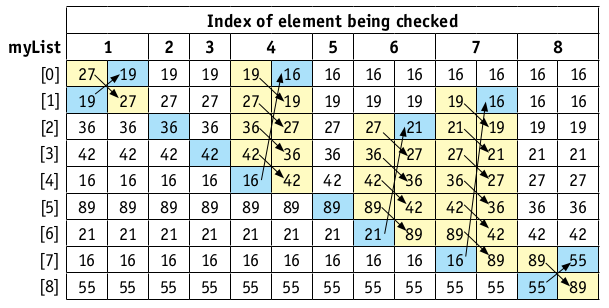
1
2
3
4
5
6
7
8
9
FOR Pointer <- 1 TO NumberOfItems - 1
ItemToBeInserted <- List[Pointer]
CurrentItem <- Pointer - 1 // Pointer to last item in sorted part of list
WHILE (List[CurrentItem] > ItemToBeInserted) AND (CurrentItem > -1) DO
List[CurrentItem + 1] <- List[CurrentItem] // move current item down
CurrentItem <- CurrentItem - 1 // look at item above
ENDWHILE
List[CurrentItem + 1] <- ItemToBeInserted // insert item
NEXT Pointer
Bubble sort
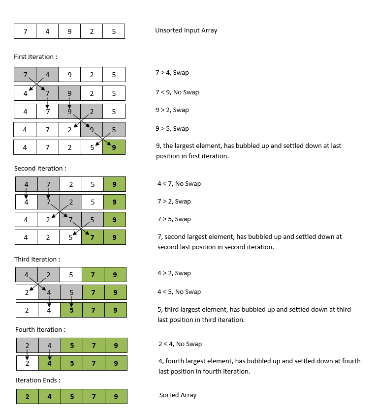
1
2
3
4
5
6
7
8
9
10
11
12
13
14
15
upperBound ← NumberOfItems - 1
lowerBound ← 0
top ← upperBound
REPEAT
FOR index = lowerBound TO top - 1
Swap ← FALSE
IF myList[index] > myList[index + 1] THEN
temp ← myList[index]
myList[index] ← myList[index + 1]
myList[index + 1] ← temp
swap ← TRUE
ENDIF
NEXT
top ← top -1
UNTIL (NOT swap) OR (top = 0)
Algorithm complexity and Big-Oh notation
Time complexity and Big-Oh notation denote how time taken by algorithm relates with number of items.
| Algorithm | Time Complexity |
|---|---|
| Linear Search | O(n) |
| Binary Search | O(log n) |
| Bubble Sort | O(n^2) |
| Insertion Sort | O(n^2) |
| Fibonacci using recursion | O(2^n) |
| Accessing an Element in an Array | O(1) |
- In linear search, you can expect time taken to double as number of items doubles but in binary search, it just takes one more step.
- Time complexity isn’t like a function that gives exact time. It is relative and it ignores lower-order term and constant factors.
Remembering time complexity of these algorithms is highly recommended.
Abstract data types
ADT is collection of data and a set of operations on that data.
- Essential operations:
- Finding items / traversal
- Adding item
- Deleting item
Stack
Stack is a FILO(First In Last Out) based ADT. Usage include: converting infix to rpn, rpn evaluation, tree traversal etc.
- Creating Stack
1
2
3
4
5
6
7
8
9
// NullPointer should be set to -1 if using array element with index 0
DECLARE TopOfStackPointer : INTEGER
CONSTANT MaxStackSize = 8
DECLARE Stack : ARRAY[1 : MaxStackSize – 1] OF STRING
# Remember: Create array, and TOS=-1 and BOS=0(Not strictly required)
PROCEDURE InitialiseStack
TopOfStackPointer ← -1
ENDPROCEDURE
- Pushing item
1
2
3
4
5
6
7
# Increase TOS and add item to that location(if stack is not full)
PROCEDURE Push(NewItem)
IF TopOfStackPointer < MaxStackSize – 1 THEN
TopOfStackPointer ← TopOfStackPointer + 1
Stack[TopOfStackPointer] ← NewItem
ENDIF
ENDPROCEDURE
- Popping item
1
2
3
4
5
6
7
8
9
# Decrement TOS and if
FUNCTION Pop()
DECLARE Item : STRING
IF TopOfStackPointer > -1 THEN
Item ← Stack[TopOfStackPointer]
TopOfStackPointer ← TopOfStackPointer – 1
ENDIF
RETURN Item
ENDFUNCTION
Queue
First In First Out based ADT
- Creating a queue
1
2
3
4
5
6
7
8
9
10
11
12
13
// NullPointer should be set to -1 if using array element with index 0
CONSTANT MaxQueueSize = 8
DECLARE FrontOfQueuePointer : INTEGER
DECLARE EndOfQueuePointer : INTEGER
DECLARE NumberInQueue : INTEGER
DECLARE Queue : ARRAY[0 : MaxQueueSize – 1] OF STRING
# Set FOQ, EOQ, N and Array
PROCEDURE InitialiseQueue
FrontOfQueuePointer ← -1 // set front of queue pointer
EndOfQueuePointer ← -1// set end of queue pointer
NumberInQueue ← 0// no elements in queue
ENDPROCEDURE
- Adding item (Enqueue)
1
2
3
4
5
6
7
8
9
10
11
# Increment EOQ pointer(with wraparound), Add item there
PROCEDURE AddToQueue(NewItem)
IF NumberInQueue < MaxQueueSize THEN
EndOfQueuePointer ← EndOfQueuePointer + 1
IF EndOfQueuePointer > MaxQueueSize – 1 THEN
EndOfQueuePointer ← 0
ENDIF
Queue[EndOfQueuePointer] ← NewItem
NumberInQueue ← NumberInQueue + 1
ENDIF
ENDPROCEDURE
- Removing item (Dequeue)
1
2
3
4
5
6
7
8
9
10
11
12
13
14
15
16
17
18
# Increment FOQ(with wraparound), Add item from previous FOQ
FUNCTION RemoveFromQueue()
DECLARE Item : STRING
Item ← ""
IF NumberInQueue > 0 THEN
Item ← Queue[FrontOfQueuePointer]
NumberInQueue ← NumberInQueue – 1
IF NumberInQueue = 0 THEN
CALL InitialiseQueue
ELSE
FrontOfQueuePointer ← FrontOfQueuePointer + 1
IF FrontOfQueuePointer > MaxQueueSize – 1 THEN
FrontOfQueuePointer ← 0
ENDIF
ENDIF
ENDIF
RETURN Item
ENDFUNCTION
Linked lists
- Creating a list
1
2
3
4
5
6
7
8
9
10
11
12
13
DECLARE mylinkedList ARRAY[0:11] OF INTEGER
DECLARE myLinkedListPointers ARRAY[0:11] OF INTEGER
DECLARE startPointer : INTEGER
DECLARE heapStartPointer : INTEGER
DECLARE index : INTEGER
heapStartPointer ← 0 #FreeList Pointer
startPointer ← -1
FOR index ← 0 TO 11
myLinkedListPointers[index] ← index + 1
NEXT index
myLinkedListPointers[11] ← -1
- Searching item
1
2
3
4
5
6
7
8
9
10
11
12
13
14
15
16
DECLARE itemSearch : INTEGER
DECLARE itemPointer : INTEGER
CONSTANT nullPointer = -1
FUNCTION find(itemSearch) RETURNS INTEGER
DECLARE found : BOOLEAN
itemPointer ← startPointer
found ← FALSE
WHILE (itemPointer <> nullPointer) AND NOT found DO
IF myLinkedList[itemPointer] = itemSearch THEN
found ← TRUE
ELSE
itemPointer ← myLinkedListPointers[itemPointer]
ENDIF
ENDWHILE
RETURN itemPointer
- Inserting item
1
2
3
4
5
6
7
8
9
10
11
12
13
14
15
16
17
DECLARE itemAdd : INTEGER
DECLARE startPointer : INTEGER
DECLARE heapstartPointer : INTEGER
DECLARE tempPointer : INTEGER
CONSTANT nullPointer = -1
PROCEDURE linkedListAdd(itemAdd)
IF heapStartPointer = nullPointer THEN
OUTPUT "Linked list full"
ELSE
tempPointer ← startPointer // keep old start pointer
startPointer ← heapStartPointer
heapStartPointer ← myLinkedListPointers[heapStartPointer] // reset heap start pointer
myLinkedList[startPointer] ← itemAdd // put item in list
myLinkedListPointers[startPointer] ← tempPointer
ENDIF
ENDPROCEDURE
- Deleting item
1
2
3
4
5
6
7
8
9
10
11
12
13
14
15
16
17
18
19
20
21
22
23
24
25
26
27
DECLARE itemDelete : INTEGER
DECLARE oldIndex : INTEGER
DECLARE index : INTEGER
DECLARE startPointer : INTEGER
DECLARE heapStartPointer : INTEGER
DECLARE tempPointer : INTEGER
CONSTANT nullPointer = -1
PROCEDURE linkedListDelete(itemDelete)
IF startPointer = nullPointer THEN
OUTPUT "Linked list empty"
ELSE
index ← startPointer
WHILE myLinkedList[index] <> itemDelete AND (index <> nullPointer) DO
oldIndex ← index
index ← myLinkedListPointers[index]
ENDWHILE
IF index = nullPointer THEN
OUTPUT "Item ", itemDelete, " not found"
ELSE
tempPointer ← myLinkedListPointers[index]
myLinkedListPointers[index] ← heapStartPointer
heapStartPointer ← index
myLinkedListPointers[oldIndex] ← tempPointer
ENDIF
ENDIF
ENDPROCEDURE
Binary Tree
- Creating Binary Tree
1
2
3
4
5
6
7
8
9
TYPE node
DECLARE item : INTEGER
DECLARE leftPointer : INTEGER
DECLARE rightPointer : INTEGER
ENDTYPE
DECLARE myTree[0 : 8] OF node
DECLARE rootPointer : INTEGER
DECLARE nextFreePointer : INTEGER
- Finding item
1
2
3
4
5
6
7
8
9
10
11
12
13
14
15
16
17
DECLARE rootPointer : INTEGER
DECLARE itemPointer : INTEGER
DECLARE itemSearch : INTEGER
CONSTANT nullPointer = -1
rootPointer ← 0
FUNCTION find(itemSearch) RETURNS INTEGER
itemPointer ← rootPointer
WHILE myTree[itemPointer].item <> itemSearch AND (itemPointer <> nullPointer) DO
IF myTree[itemPointer].item > itemSearch THEN
itemPointer ← myTree[itemPointer].leftPointer
ELSE
itemPointer ← myTree[itemPointer].rightPointer
ENDIF
ENDWHILE
RETURN itemPointer
ENDFUNCTION
- Inserting item
1
2
3
4
5
6
7
8
9
10
11
12
13
14
15
16
17
18
19
20
21
22
23
24
25
26
27
28
29
30
31
32
33
34
35
36
37
38
39
40
41
42
43
44
45
46
47
TYPE node
DECLARE item : INTEGER
DECLARE leftPointer : INTEGER
DECLARE rightPointer : INTEGER
DECLARE oldPointer : INTEGER
DECLARE leftBranch : BOOLEAN
ENDTYPE
DECLARE myTree[0 : 11] OF node
DECLARE rootPointer : INTEGER
DECLARE nextFreePointer : INTEGER
DECLARE itemPointer : INTEGER
DECLARE itemAdd : INTEGER
DECLARE itemAddPointer : Integer
CONSTANT nullPointer = -1
PROCEDURE nodeAdd(itemAdd)
IF nextFreePointer = nullPointer THEN
OUTPUT "No nodes free"
ELSE
itemAddPointer ← nextFreePointer
nextFreePointer ← myTree[nextFreePointer].leftPointer
itemPointer ← rootPointer
IF itemPointer = nullPointer THEN
rootPointer ← itemAddPointer
ELSE
WHILE (itemPointer <> nullPointer) DO
oldPointer ← itemPointer
IF myTree[itemPointer].item > itemAdd THEN
leftBranch ← TRUE
itemPointer ← myTree[itemPointer].leftPointer
ELSE
leftBranch ← FALSE
itemPointer ← myTree[itemPointer].rightPointer
ENDIF
ENDWHILE
IF leftBranch THEN
myTree[oldPointer].leftPointer ← itemAddPointer
ELSE
myTree[oldPointer].rightPointer ← itemAddPointer
ENDIF
ENDIF
myTree[itemAddPointer].leftPointer ← nullPointer
myTree[itemAddPointer].rightPointer ← nullPointer
myTree[itemAddPointer].item ← itemAdd
ENDIF
ENDPROCEDURE
Programming
Programming paradigm : Set of programming concepts
- Low-level programming : Uses computer’s basic instruction set. You manipulate content of registers.
- Imperative programming : Steps required to execute a program are set out in order.
- Object-oriented programming : Uses concept of class
- Declarative programming : You specify what to do and not how to do. Uses queries to exract data. Limited.
Object Oriented Programming
Programming paradigm that uses self-contained objects, which contain programming attributes(data) and methods(associated functions).
- Class: Template/Blueprint that defines methods and data of a certain type of object.
- Attributes: Data items in a class
- Method: Programmed procedure that is defined as part of a class
- Encapsulation: Putting data and methods together as a single unit.
- Object: Instance of class that is self-contained and includes data and methods.
- Instance: Occurence of object during program execution.
- Data hiding: Restricted access to data and methods within that object.
- Inheritance: Data and methods are copied from superclass/base_class to derived class.
- Polymorphism: Redefining methods for derived class
- Overloading: Defining method more than once in a class so it can be used in different situations.
-
Containment/Aggregation: One class contains other classes.
- OOP methods:
- constructors: method to initialize a new object
- setters: methods that set value of attributes
- getters: methods that return value of attributes
- destructors: methods to free memory allocated during initialization
Recursion
A function that is defined in terms of itself. / A function that calls itself.
- When can you use recursion:
- Function can be defined in terms of itself.
- Value for fn(n) depends on fn(m): m < n.
- There should be base case when there is no recursive call.
- With each call, the function should get closer to base case.
-
Use of stack during recursion call: 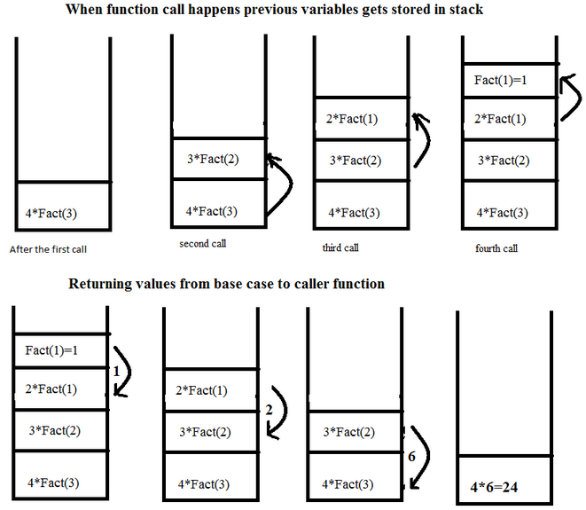
- Advantage:
- Elegant code (Shorter and simpler)
- Easier to code
- Disadvantage:
- Recursive calls can take large amount of memory and time
- Can’t be used for every problem